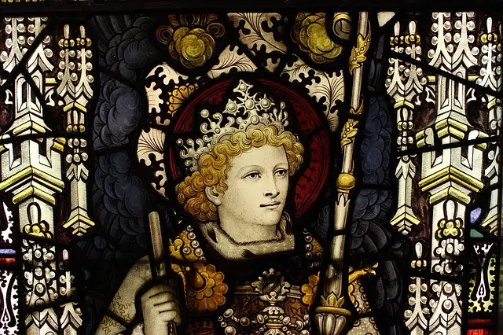

Monarquismo
El monarquismo es una ideología política que apoya el sistema de gobierno en el cual un monarca, como un rey o una reina, actúa como jefe de estado dentro de los parámetros de una constitución o en un sistema absoluto de gobierno.
Características del Monarquismo
1. Jefatura de Estado Hereditaria:
En la mayoría de las monarquías, el título de monarca es hereditario, pasando de un miembro de la familia real a otro, generalmente de padres a hijos. La sucesión puede ser regulada por la primogenitura, la ley sálica o por otros sistemas de herencia.
2.Duración Vitalicia:
Los monarcas suelen servir de por vida, a menos que abdiquen. Esto proporciona una continuidad en el liderazgo que puede ser vista como una ventaja en términos de estabilidad política.
3. Simbolismo y Tradición:
Las monarquías a menudo se basan en tradiciones antiguas y rituales que refuerzan la legitimidad del monarca. Estos rituales pueden incluir coronaciones, ceremonias religiosas y eventos públicos que celebran la historia y la cultura de la nación.
4. Autoridad Simbólica o Real:
En algunas monarquías, el monarca tiene poder político real y significativo, mientras que en otras, el monarca tiene principalmente un papel ceremonial y simbólico, con el poder político real ejercido por otros órganos del gobierno, como el parlamento o el primer ministro.
Tipos de Monarquía
1.Monarquía Absoluta: En este sistema, el monarca tiene un poder casi ilimitado sobre el estado y sus asuntos. El monarca no está restringido por leyes o una constitución escrita, y su voluntad es la ley suprema. Ejemplos históricos incluyen la Francia de Luis XIV, conocido como el Rey Sol, y el Imperio Ruso bajo los zares.
2. Monarquía Constitucional: En una monarquía constitucional, el poder del monarca está limitado por una constitución o leyes del parlamento. El monarca actúa como jefe de estado simbólico, mientras que el poder legislativo y ejecutivo es ejercido por funcionarios electos. Ejemplos contemporáneos incluyen el Reino Unido, Suecia y Japón, donde la reina Isabel II, el rey Carlos XVI Gustavo y el emperador Naruhito, respectivamente, tienen roles ceremoniales.
3.Monarquía Electiva: En una monarquía electiva, el monarca es elegido por un pequeño grupo de personas, como el Senado, un consejo aristocrático o el clero. Este tipo de monarquía es menos común y fue más prevalente en la historia medieval y renacentista. Ejemplos históricos incluyen el Sacro Imperio Romano Germánico, donde los emperadores eran elegidos por los príncipes electores, y la República de Venecia, donde el Dux era elegido por un complejo sistema electoral.
Ejemplos de Monarquías Históricas y Contemporáneas
Reino Unido: Una de las monarquías constitucionales más conocidas, donde el monarca actúa como jefe de estado simbólico y el poder legislativo reside en el parlamento. La monarquía británica ha evolucionado a lo largo de los siglos, reduciendo el poder del monarca en favor de un gobierno parlamentario.2. Francia de los Borbones: Ejemplo de monarquía absoluta, especialmente bajo Luis XIV, quien centralizó el poder en la figura del rey y proclamó "L'État, c'est moi" ("El Estado soy yo"), reflejando la concentración de todo el poder en su persona.
3. Japón: Una monarquía constitucional moderna, donde el emperador tiene un rol ceremonial con poderes limitados. La monarquía japonesa es una de las más antiguas del mundo, con una historia que se remonta a más de mil años.
4. Arabia Saudita: Un ejemplo de monarquía absoluta contemporánea, donde el rey tiene amplios poderes sobre el estado y la sociedad. La monarquía saudí se basa en la ley islámica y mantiene un sistema de gobierno altamente centralizado.
Monarquismo en la Actualidad
Hoy en día, el monarquismo sigue siendo relevante en muchos países. Las monarquías constitucionales modernas combinan la estabilidad y la tradición del monarquismo con los principios democráticos y la gobernanza moderna. Aunque el poder de los monarcas se ha reducido significativamente, su papel simbólico y ceremonial continúa siendo importante en las sociedades contemporáneas. Las monarquías constitucionales a menudo participan en actividades caritativas y diplomáticas, reforzando su relevancia en el mundo moderno.
En conclusión el monarquismo es una ideología que ha evolucionado a lo largo de los siglos, adaptándose a los cambios políticos y sociales. Aunque el número de monarquías absolutas ha disminuido, las monarquías constitucionales siguen desempeñando un papel significativo en el mundo actual, combinando tradición y modernidad para mantener su relevancia en el siglo XXI. En un contexto global donde la democracia y los derechos humanos son valores fundamentales, las monarquías modernas han encontrado formas de coexistir con estos principios, ofreciendo estabilidad y continuidad en tiempos de cambio.
REPRESENTACION

Video
Bibliografía
- Smith, R. (2017). Monarchy: The History and Theory of the World's Most Enduring Institution. Oxford University Press, 1(1), 1-384.